ビフォー・アフター
クリップのままでは、まだ伝わらない。
プレーを探してクリップを切り出すところまでは、スカウティングソフトでもできます。ただ、何も載っていないクリップでは、どこを見ればいいかは選手まかせです。同じ瞬間を、プレイリストのクリップと、このアプリで仕上げたものとで並べました。


データが自動で入れるもの
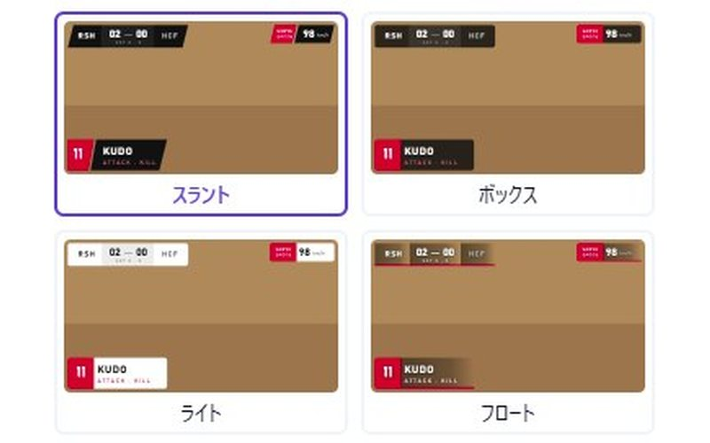
スコアボードそのラリーの点数とセット。デザインは 4 種類。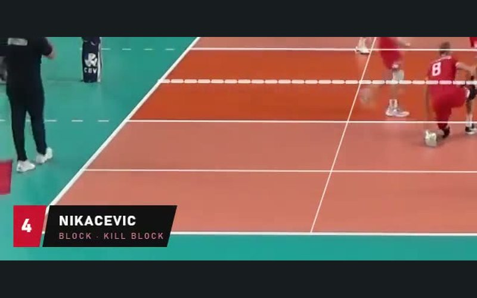
選手テロップ背番号・名前・スキル・評価。写真パックがあれば選手の写真も。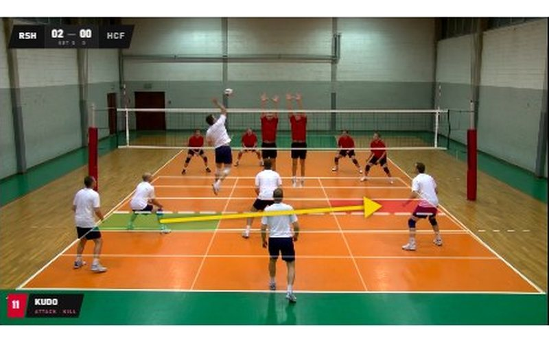
コート上の表示落下点とヒートマップ、軌道、ゾーン、サーブのコース、コーンを映像の床の上に。ボールが落ちた場所には波紋・ロックオン・フラッシュ・尾の光も。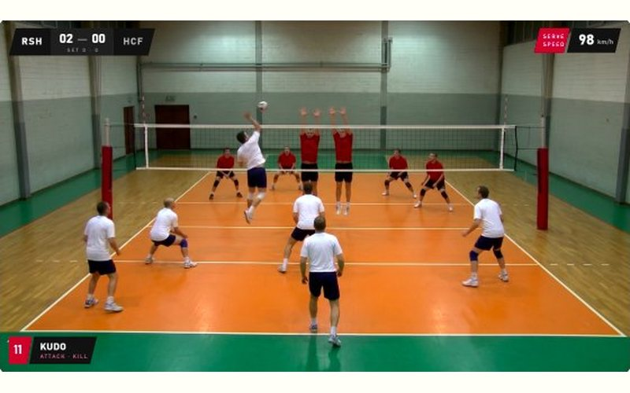
サーブ速度ヒットとタッチを打つと、サーブの速さをクリップに表示。
自分で足すもの（数クリック）
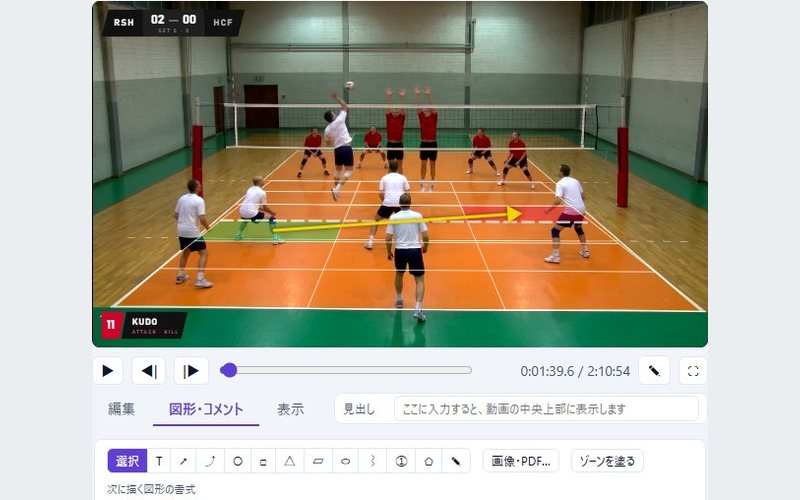
伝えたい一言テキスト、矢印と曲線の矢印、図形、フリーハンド、丸付き数字。それぞれに表示時間とフェード、描き込み・パルス・点滅・波紋で目を引く動きも。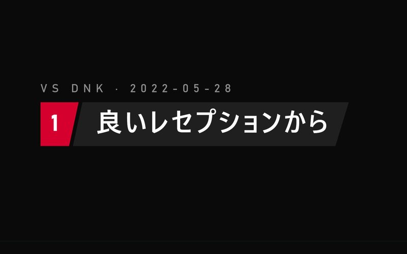
タイトルカード動画・シーン・マーカーごとに。選手の写真やチームのロゴも入れられます。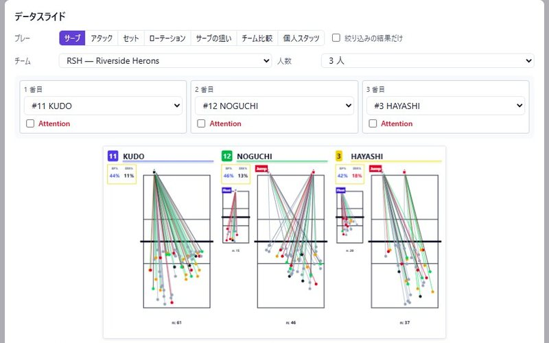
スライド静止画、PDF のページ、データスライドをクリップの間に。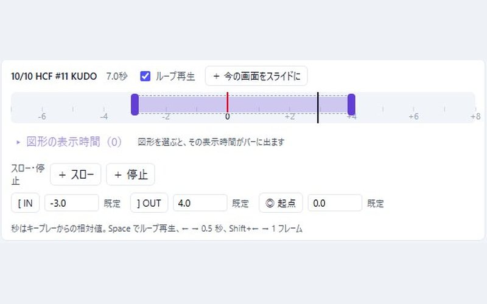
タイミングクリップごとに IN / OUT を詰め、スローや一時停止も。

プリセット
動画 1 本を、ひと手間で。
- サイドアウトローテごとにシーン。中はレセプションの質・選手・ゾーン・結果で分けられます。
- サーブサーブした選手ごとにシーン。マーカーはレセプション評価別・ゾーン別・時系列。
- ブロックとアタックミドル別やローテ別、アタッカー別・ポジション別・アタックコード別。
- 作り直し動画は作り方を覚えています。試合を選び直して、もう一度作れます。
データスライド
データから、スライドを。
チームを選ぶと、アプリがスライドを描きます。文字や写真はあとから動かせ、矢印や図形も足せます。動画の中で流すことも、PNG・PDF・PowerPoint（図形はあとから動かせます）に書き出すこともできます。チームの選手ごとのサーブ・アタック・レセプションの表もあります。


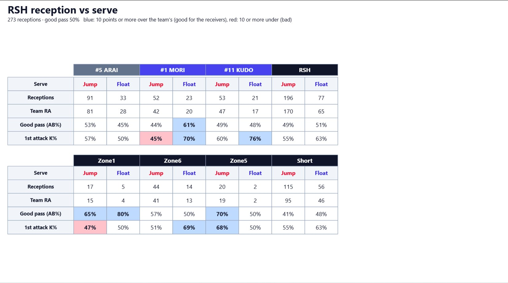
そのほかの機能
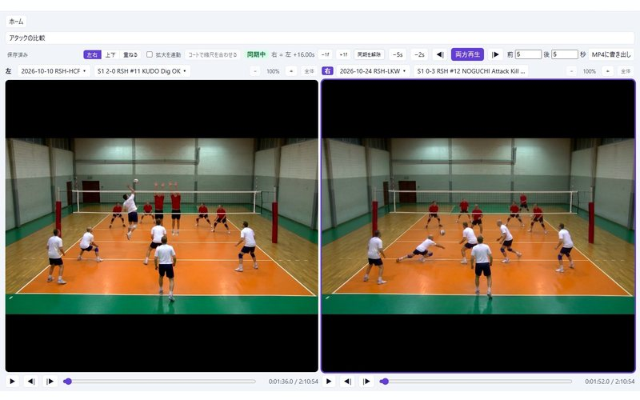
比較動画2 本の動画を左右・上下・重ねて並べ、同じ瞬間に合わせて見比べ。拡大も連動でき、そのまま MP4 に。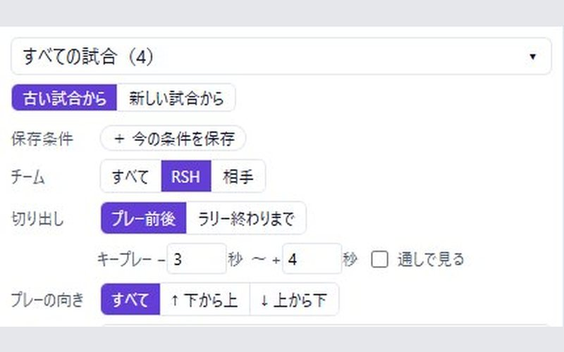
保存条件絞り込みの条件に名前を付けて保存し、クリックで呼び出し。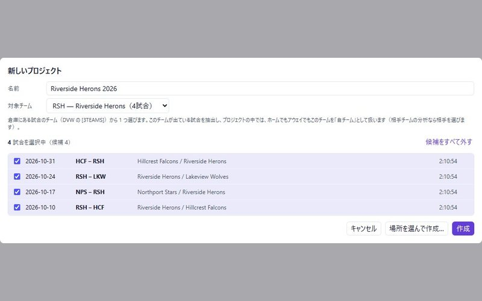
試合を倉庫にまとめる一度取り込めば、同じ試合からいくつでもプロジェクトを作れます。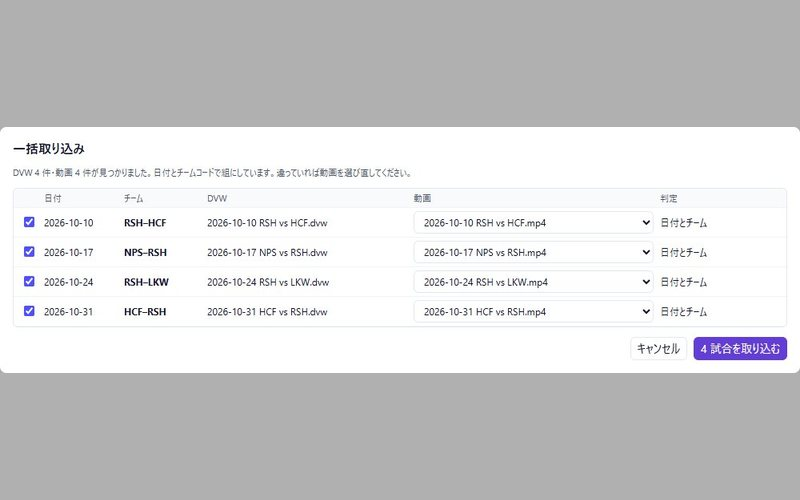
一括取り込みフォルダを選べば動画とスカウトファイルを自動で組にします。VolleyStation の .vsm も。 選手写真パック写真を一度入れれば、テロップ・タイトルカード・スライドで使えます。
選手写真パック写真を一度入れれば、テロップ・タイトルカード・スライドで使えます。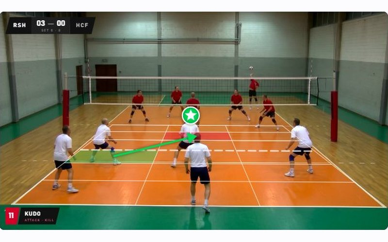
通しで見るプレー一覧をラリーごとに通しで再生。コートの印がサーブ・レセプション・アタックに合わせて動きます。 PowerPoint に書き出しシーンのスライドを .pptx に。文字や図形はあとから編集できます。
PowerPoint に書き出しシーンのスライドを .pptx に。文字や図形はあとから編集できます。 日本語と英語設定で表示言語を切り替え。
日本語と英語設定で表示言語を切り替え。
このほか、作業は自動で保存され、元に戻す・やり直すにも対応。新しいバージョンは裏でダウンロードし、再起動で更新します。
SyncScout シリーズ
SyncScout で見つけ、Video Editor で伝える。
| SyncScout | SyncScout Video Editor | |
|---|---|---|
| 役割 | 映像を探して見る | 見せたい動画・スライド・レポートを仕上げる |
| 動く場所 | Web | 自分のパソコン（オフライン） |
| 素材 | YouTube の動画とスカウトファイル | 手元の動画ファイルと .dvw / .vsm |
| 用途 | チームでの共有と視聴 | ミーティングと、スタッフが見せたいもの |
DataVolley・VolleyStation と一緒に使うと：動画づくりで時間がかかりがちなところと、このアプリでの変化 →
自分の動画とスカウトファイルで試す
Windows 版と Mac 版を公開中です。14 日間無料で試せます。 DataVolley・VolleyStation との違い →